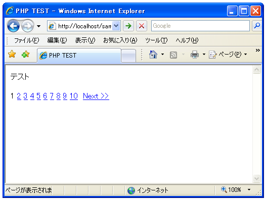
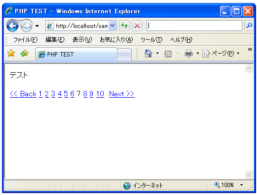

ナビゲーションリンクの作成
ここではアイテムを分割して表示するための各ページへのリンクを作成する方法を確認します。Pagerクラスで用意されている「getLinks」メソッドを使います。
Pager::getLinks() array Pager::getLinks ([integer $pageID = NULL])
引数： $pageID 省略可能。ページIDを指定する。デフォルトは現在のページ 戻り値： 連想配列として戻る/次/最初/最後のリンクとページリンク
Pagerクラスのオブジェクトに対して「getLinks」メソッドを使用すると、他のページへリンクを行う為のHTML文字列を取得できます。この取得したHTML文字列を画面表示することで他のページへのリンクが表示されます。
取得した値は連想配列となっています。取得したい内容にあったキーを指定して文字列を取得して下さい。指定可能なキーと取得できる文字列は次の通りです。
| キー | 内容 |
|---|---|
| first | 最初のページへのリンク |
| last | 最後のページへのリンク |
| back | 前のページへのリンク |
| next | 次のページへのリンク |
| pages | 各ページへのリンク一覧 |
| all | 全ての要素(順序はfirst/back/pages/next/last) |
例えば次のように記述します。
$options = array( "totalItems" => 200, "delta" => 10, "perPage" => 8 ); $pager =& Pager::factory($options); $navi = $pager -> getLinks(); $str = $navi["all"];
この場合はキーとして「all」を指定していますので、各要素へのリンクを全て表示します。ただし後で説明する動作モードによって表示される内容は異なります。ジャンプモードの場合は「前/ページ/後」で表示され、スライドモードの場合は「先頭/前/ページ/後/最後」となります。
デフォルトであるジャンプモードで先頭及び最後のリンクを表示する場合は次のように記述して下さい。
$options = array( "totalItems" => 200, "delta" => 10, "perPage" => 8 ); $pager =& Pager::factory($options); $navi = $pager -> getLinks(); print($navi["first"]); print($navi["all"]); print($navi["last"]);
サンプルプログラム
では簡単なサンプルで実際に試してみます。
<html>
<head><title>PHP TEST</title></head>
<body>
<p>テスト</p>
<?php
require_once("Pager/Pager.php");
$options = array(
"totalItems" => 200,
"delta" => 10,
"perPage" => 8
);
$pager =& Pager::factory($options);
$navi = $pager -> getLinks();
print($navi["all"]);
?>
</body>
</html>
上記をWWWサーバに設置しブラウザで見てみると下記のように表示されます。

今回はリンク部分だけを表示しています。リンクとして表示された箇所をクリックしてみて下さい。例えば「7」と書かれた箇所をクリックしてみます。

リンクしか表示していませんので分かりにくいですが7ページ目が表示されています。
一度に表示されるリンクの数やリンクとして表示される文字列などはPagerクラスを作成する時のオプションで指定することが出来ます。
( Written by Tatsuo Ikura )

著者 / TATSUO IKURA
初心者～中級者の方を対象としたプログラミング方法や開発環境の構築の解説を行うサイトの運営を行っています。